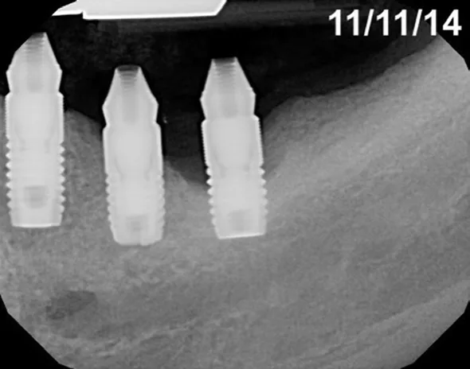
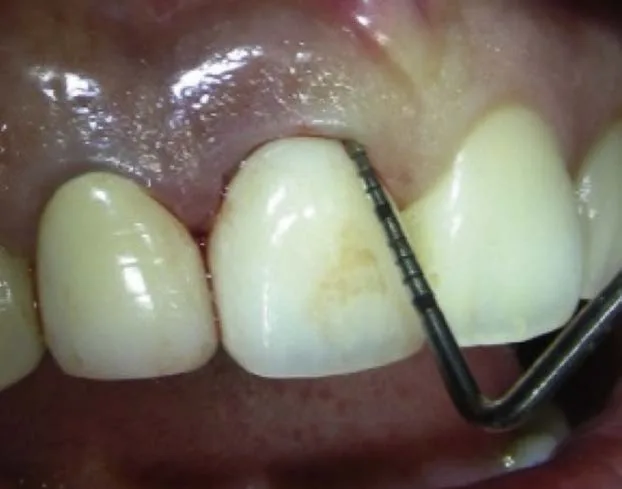

نسخه استخراجشده؛ ترجمه یا تأیید علمی انجام نشده است. وضعیت: captured
بسیاری فکر میکنند برنامهی نگهداری یعنی «هر شش ماه». ولی واقعیت این است که فاصله باید از وضعیت مشتق شود، نه از عادت.
حالت پایه: «اگر سلامت پریایمپلنت طبیعی باشد، بیماران معمولاً میتوانند روی یک سیستم بازیابی ۳ تا ۶ ماهه قرار گیرند.»
و مسیر رسیدن به ۶ ماه: «اگر پس از سال اول بافتهای پریایمپلنت سالم باشند، فاصلهی نگهداری ممکن است به ۶ ماه گسترش یابد.»
به منطق دقت کن: ۶ ماه یک نقطهی پایان است که با اثبات سلامت به دست میآید، نه نقطهی شروع. سال اول با فاصلهی ۳ ماهه میگذرد تا سلامت بافت و مراقبت خانگی بیمار سنجیده شود.
و شرط بازگشت به فاصلهی کوتاهتر: «با این حال، اگر بیمار عوامل خطر یا بیماریهای همراه نشان دهد، باید به پروتکل بازیابی سختگیرانهتری پایبند بود.»
و برای بیماری که در معرض هایپرپلازی بافت اطراف ایمپلنت است (مثلاً بهخاطر دارو)، توصیه روشنتر است: «علاوه بر این، یک پروتکل بازیابی مکررتر (چهار بار در سال) باید اجرا شود که شامل دبریدمان است.»
چهار بار در سال = هر سه ماه. و همین با این یافته میخواند که موکوزیت میتواند پس از تنها ۳ ماه تجمع پلاک پیشرفت اپیکالی نشان دهد.
پس فاصلهی ۳ ماهه دلخواه نیست — از زیستشناسی بیماری میآید.
و پس از دبریدمان در مطب، یک الگوی زمانی مشخص:
• «پس از پروسیجرهای دبریدمان، یک ویزیت پیگیری باید تقریباً یک ماه بعد برنامهریزی شود.»
• «معمولاً پس از پیگیری یکماهه، بیمار باید روی بازیابی ۳ ماهه دیده شود.»
یک ماه، سپس هر سه ماه. ویزیت یکماهه برای ارزیابی پاسخ به درمان است — همان بازهای که در یونیت پیش دیدی حذف سمان در آن نشانهها را رفع میکند.
و در گروه ۲ همان الگو با کلمات دیگر: فواصل کوتاهتر جلسات بهداشت (۳ ماه)، و رادیوگرافی سالانه تا زمانی که استخوان کرستال پایدار شود.
یک استثنای مهم: «بارداری: در دورهی نگهداری، رادیوگرافیها باید در بیماران باردار تا پس از زایمان به تعویق بیفتد.»
یعنی بخش بالینی برنامه ادامه مییابد ولی بخش رادیوگرافیک به تعویق میافتد — و این یادآوری میکند که پایش دو جزء جداگانه دارد.
و یک نکتهی کنترل عفونت که ساده ولی مهم است:
«برای پیشگیری از آلودگی، نوک پروب دندانی ممکن است پس از هر خواندن در کلرهگزیدین قرار داده شود، و بدینترتیب احتمال تلقیح ناحیهی سولکولار محل بعدی پروبشده کاهش مییابد.»
یعنی خودِ ابزار معاینه میتواند بیماری را از یک محل به محل دیگر ببرد — عارضهای که کسی به آن فکر نمیکند.

مراقبت خانگی پیششرط است، نه مکمل:
«یک برنامهی مؤثر بهداشت دهان برای به حداقل رساندن بیماری پریایمپلنت بسیار مهم است.»
و زمان ارزیابی آن را هم مشخص میکند: «ایدهآل، یک ارزیابی مراقبت خانگی باید پیش از آغاز درمان ایمپلنت دندانی تعیین شود.»
پیش از آغاز درمان. یعنی توانایی بیمار در مراقبت، بخشی از معیار انتخاب مورد است — نه چیزی که بعداً آموزش داده شود و امید داشته باشیم جواب دهد.
مسواک بیندندانی: «ایدهآل این نوع وسیله باید پوشش پلاستیکی داشته باشد چون فلز ممکن است سطح ایمپلنت را آسیب بزند.»
همان قاعدهی درس ابزار، این بار در دست بیمار: فلز روی تیتانیوم، نه.
و یک فایدهی کمتر گفتهشده: «مسواک بیندندانی برای ماساژ بافت لثهای به کار میرود، که به افزایش جریان خون و بافت سالمتر میانجامد.»
و این را با آنچه در یونیت پیش خواندی وصل کن: یکی از سه ضعف ساختاری ایمپلنت، خونرسانی کمتر بود. پس ماساژ بافت، مستقیماً یکی از آن ضعفها را جبران میکند.
کلرهگزیدین — و دو عدد:
عدد اول: «مطالعات نشان دادهاند که یک شستوشوی ۳۰ ثانیهای کلرهگزیدین ۹۰ درصد باکتریهای دهان را برای بیش از ۵ ساعت مهار میکند.»
۳۰ ثانیه، ۹۰ درصد، بیش از ۵ ساعت. این ماندگاری از substantivity کلرهگزیدین است، یعنی اتصالش به بافت نرم و سطح ایمپلنت. و نحوهی مصرف: «کلرهگزیدین یا ستیلپیریدینیوم کلراید ممکن است موضعی با سواب پنبهای به کار رود یا بهصورت شستوشو دو بار در روز.»
عدد دوم — و این غافلگیرکننده است:
«مطالعاتی که شستوشو با کلرهگزیدین ۰٫۱۲ درصد را با ایریگیشن با کلرهگزیدین ۰٫۰۶ درصد مقایسه کردند، نشان دادند گروه ایریگیشن در کاهش ژنژیویت ۸۷ درصد مؤثرتر از گروه شستوشو بود.»
به این دقت کن: گروه ایریگیشن غلظت نصف داشت (۰٫۰۶ در برابر ۰٫۱۲ درصد) و با این حال ۸۷ درصد مؤثرتر بود.
نتیجهی اصلی این است: در این مقایسه، روش رساندن ماده از غلظت آن مهمتر بود. مادهای که به زیر لبهی لثه نرسد، هر چقدر هم قوی باشد کاری نمیکند — همان اصلی که در بحث نفوذ به بیوفیلم دیدی.
و کارکرد ماده هم روشن است: «یک ضدمیکروبی (برای نمونه کلرهگزیدین، ستیلپیریدینیوم کلراید) ممکن است بهعنوان شوینده به کار رود که شمار باکتری در حفرهی دهان را کاهش میدهد.»
ولی یک هشدار دربارهی ایریگیشن: «با این حال، باید احتیاط کرد چون استفادهی نادرست یا فشار آب بیشازحد ممکن است بافتهای پریایمپلنت را آسیب بزند.»
یعنی این ابزار نیازمند آموزش است، نه صرفاً تجویز. فشار زیاد میتواند اپیتلیوم اتصالی را آسیب بزند و حتی به باکتریمی بینجامد — یعنی همان سدی را که میخواهی حفظ کنی از بین ببرد. پس سرعت کم تا متوسط و نوک عمود بر محور بدنهی ایمپلنت را آموزش بده.
جمعبندی این یونیت — و کل این تخصص: از انتخاب مورد تا برنامهی مادامالعمر، هر مرحله سهم خودش را در سرنوشت ایمپلنت دارد. و مرحلهای که بیشترین زمان را میگیرد، همان نگهداری است که کمترین توجه را میگیرد.
